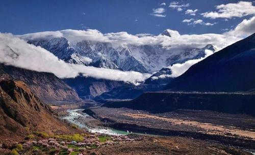
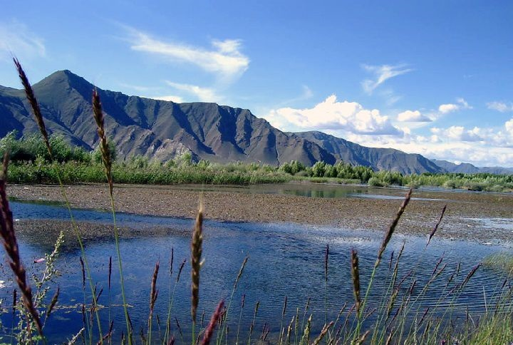

地理位置
山南，是中华人民共和国西藏自治区下辖地级市，位于冈底斯山至念青唐古拉山以南，雅鲁藏布江干流中下游
地区，北接西藏首府拉萨，西与日喀则毗邻，东与林芝相连，南与印度、不丹两国接壤，地处东经90°14"至
94°22"、北纬27°08"至29°47"之间，是西藏古文明的发祥地之一。
形成历史
山南是西藏古文明的发祥地之一，传说当中神猴同罗刹女结合而诞出藏民之地，历史悠久，文化灿烂。大约在四、五万年以前，
雅砻一带就有藏族先民繁衍生息。
先民们在鸟兽群集、果木丛生的雅砻河谷过着以树叶为衣、野果为食的群居采集生活。经过漫长岁月，逐渐学会了制作弓箭、
石器等工具，学会了饲养牦牛等动物和种植青稞等作物。今泽当附近萨热村的一块土地“索当”，是传说中西藏的第一块农田。
约在公元前2世纪初叶，居住在雅砻一带的人们逐渐形成部落，早期悉补野部落的首领第一代赞普聂赤统一牦牛部落，建立联
盟政权，并确立了子孙世袭赞普制度。
从第八代赞普布德贡布杰到第十四代赞普伊肖烈，在雅砻河流域的青域先后兴建达孜、桂孜、扬孜、赤孜、孜母琼结、赤则崩都
等6宫，把琼结作为雅砻部落的大本营。第八代赞普布德贡布杰在雅砻地区组织民众兴修水渠，将山水引入平地，开垦出块块
农田，并自制木犁耕地。第十一代赞普茹烈，制订了以二牛一日耕的地为耕地面积单位，以“推”（藏语音）为计算牲畜头数的计
量单位。到第二十七代赞普拉托托日年赞时期，佛教传入雅砻河俗，赞普将“天竺”僧人带来的经书、法器称为“宁布桑娃”，供奉
在雍布拉康。6世纪左右，雅砻一带进入奴隶社会，居民已能冶炼铁、铜、银，制造金属武器。第三十一代赞普囊日松赞时期不断
扩张领地，使雅砻部落成为西藏最强大的部落。
地貌特征

山南属于典型的藏南谷地，地势自西向东逐渐降低，平均海拔在3700米左右。山南雪山冰川众多，海拔6000米以上的雪山就有10多座，其
中对外开放的山峰有5座，分别位于错那、洛扎、浪卡子三县境内，平均海拔近7000米，最高7554米。此外还有位于乃东和桑日县境内的雅
拉香布雪山和沃德贡雪山，平均海拔6000米以上，原始冰川终年不化.山南属温带干旱性气候，南部边境地带属高原亚寒带半干旱气候。年均
降水量不到450毫升，雨季多集中在6至9月。全地区全年日照时间为2600-3300小时，年平均气温最低为6℃，最高8.8℃；最高气温31℃（
加查），最低气温零下37℃（错那）。年均风速在3米/秒左右，最大风速为17米/秒，风期主要集中在12月至次年3月。山南江河稠密，全市最
大的河流雅鲁藏布江中游地段在山南形成302公里的宽广地带，最宽处达7公里，流经贡嘎、扎囊、桑日、加查、曲松、乃东、浪卡子七县，滋养
着沿江两岸万亩人工林地。全地区共有大小河流41条，其中雅砻河、温区河、沃卡河、增其河流域旅游资源集中。全地区有大小湖泊数十个，其中
以富有神奇色彩的圣湖拉姆纳措，素有“碧玉湖”之称的羊卓雍湖和“草原明珠”哲古湖最为著名。